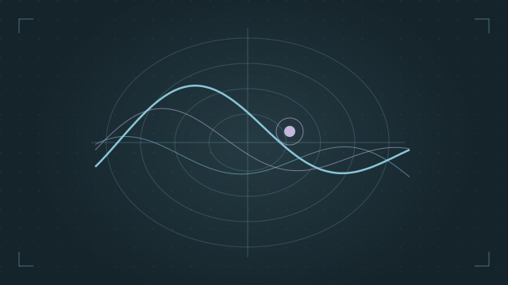
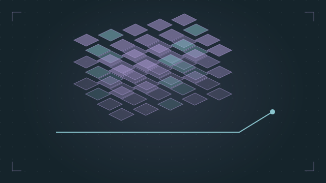
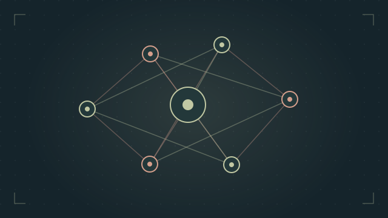
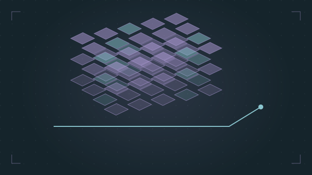
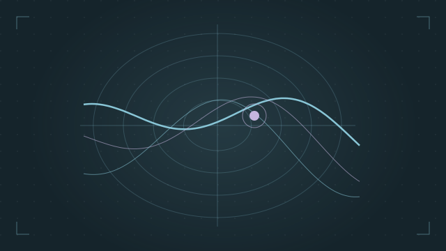
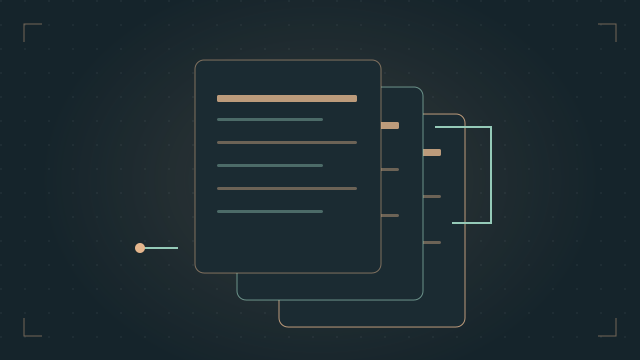
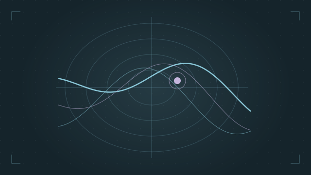
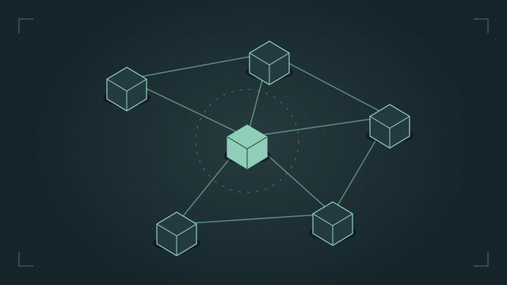
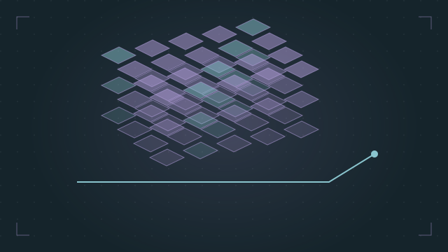
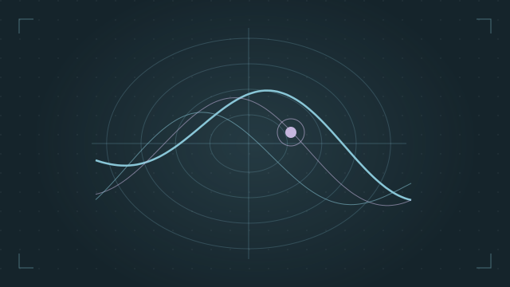

Experience
Engineering, research, and the people behind the work.
- MP EquipmentGainesville, Georgia
-
Industrial IoT & Data Engineer InternMay 2026–Present
- Build pipelines combining IoT sensor streams, equipment alarm history, M1 ERP data, and operational reporting.
- Develop maintenance workflows using vibration, temperature, and machine-state signals to identify abnormal behavior.
- Design Power BI dashboards for OEE, downtime, production KPIs, and equipment health.
Industrial IoT & Data Engineering InternJanuary–May 2026
- Developed ETL pipelines for sensor data, including cleaning, missing-value handling, and outlier analysis.
- Analyzed alarm history and built machine-level Power BI views to support maintenance decisions.
Computer Science InternMay–December 2025
- Built Python and SQL pipelines for IoT sensor data and M1 ERP records.
- Created reporting for delivery, vendor performance, production, and equipment monitoring.
- Automated recurring reports and resolved data-quality issues with engineering and operations.
- Gooder AIRemote
Data Analyst Intern
February–June 2024
Worked with Python and data warehousing.
- Georgia State UniversityAtlanta, Georgia
-
Honors College MentorAugust 2023–May 2024
Mentored honors students through academic challenges and supported educational and leadership initiatives.
Undergraduate Research AssistantJanuary–May 2023
Worked on data mining and machine learning research, managing data models and building a frontend for viewing data over a selected date range.
University Research AssistantAugust–December 2022
Mined social-network data, including Reddit, and analyzed patterns of relationships within groups.
Projects
Systems, data, and ideas put into practice.

Systems C++
Raft & MVCC
Raft consensus and serializable MVCC in C++17, with linearizability checks and a WebAssembly demo.
Explore repository
Data & finance Python
SEC EDGAR MCP
An MCP server for searching SEC filings and retrieving XBRL financial facts.
Explore repository
Signals & autonomy Python
Track Fusion
Multi-target tracking with IMM estimation, JPDA association, and OSPA evaluation.
Explore repository
ML infrastructure TypeScript
TensorForge WebGPU
A typed tensor compiler with optimization passes, WGSL generation, and a live WebGPU correctness lab.
Explore repository
Systems Python
Faultgraph
Causal incident analysis with counterfactual replay and a React investigation workbench.
Explore repository
Portfolio tools CSS
Counterexample
A collection of reproducible engineering failures with exact commits and signed receipts.
Explore repository
ML infrastructure Python
PTQ Budget
Post-training quantization evaluated against an exact full-precision reference.
Explore repository
ML infrastructure Python
RAG Evaluation
Hybrid retrieval, reranking, and a reproducible evaluation harness for RAG quality.
Explore repository
ML infrastructure Python
Grammar Decode
JSON Schema compiled into an automaton for constrained language-model decoding.
Explore repository
ML infrastructure Python
Feature Store
Point-in-time training data, streaming materialization, and train/serve consistency.
Explore repository
Portfolio tools TypeScript
Systems Portfolio
A systems portfolio connecting technical claims to source code and reproducible benchmarks.
Explore repository
Systems C++
CDCL SAT Solver
A C++17 SAT solver that emits DRAT proofs for independent verification.
Explore repository
Systems Python
Query Planner
Join ordering, cost models, and cardinality estimation compared with a perfect-information oracle.
Explore repository
Data & finance Python
AAD Greeks
Automatic differentiation for option Greeks, checked against analytic formulas and bumped baselines.
Explore repository
Portfolio tools Python
Portfolio Operations
Automation for benchmark, documentation, release, and maintenance workflows.
Explore repository
ML infrastructure Python
ANNLite
An HNSW vector index with SIMD distance kernels, Python bindings, and an HTTP service.
Explore repository
Portfolio tools Python
Witness
A reproducibility workbench for systems, machine-learning, autonomy, and finance counterexamples.
Explore repository
Portfolio tools TypeScript
Proofgraph
An interactive way to navigate claims, measurements, boundaries, source code, and evidence.
Explore repository
Systems Python
Sampling Profiler
A sampling profiler evaluated against workloads with known CPU shares.
Explore repository
Systems Python
Simulation Test Harness
Virtual clocks, networks, and disks for seeded fault injection and linearizability testing.
Explore repository
Data & finance Python
Backtest Honest
A backtester that measures selection bias using deflated Sharpe and purged cross-validation.
Explore repository
Signals & autonomy Python
Visual-Inertial Navigation
Visual-inertial odometry using IMU preintegration and feature marginalization.
Explore repository
ML infrastructure Python
Codebase Q&A
Codebase question answering with authentication, rate limits, a durable queue, and tracing.
Explore repository
Data & finance Python
Limit Order Book
A limit order book with market-making strategies and adverse-selection measurement.
Explore repository
Systems C++
LSM Tree
A dependency-free C++17 storage engine with SSTables, Bloom filters, tombstones, and compaction.
Explore repository
Signals & autonomy Python
SAR Focus
Synthetic aperture radar image formation with pulse compression, backprojection, and autofocus.
Explore repository
Data & finance Python
XBRL Normalize
Normalizes SEC XBRL company facts into comparable financial statements.
Explore repository
Systems C++
Columnar Engine
A C++17 analytical engine with vector processing, hash aggregation, joins, and differential tests.
Explore repository
Systems C++
WAL Recovery
A C++17 write-ahead log with checksums, atomic recovery, and torn-write detection.
Explore repositoryML infrastructure Python
vLLM Lite
An inference server with paged KV cache, continuous batching, and speculative decoding.
Explore repository
Systems Python
HotStuff BFT
Chained HotStuff consensus evaluated under an adversarial scheduler.
Explore repository
ML infrastructure Python
Distributed Training
Ring all-reduce and data, tensor, and pipeline parallelism built from send/receive primitives.
Explore repository
ML infrastructure Python
Agent Harness
An agent runtime with sandboxed execution, attack tests, and a deterministic benchmark.
Explore repository
Signals & autonomy Python
SDR Receiver
A QPSK radio receiver with timing acquisition, soft decisions, and LDPC decoding.
Explore repositoryNo projects match. Try another search or select All.
Education
- University of Georgia
- GPA: 3.86
- Bachelor of Science in Computer Science
- Expected December 2026
Honors and Awards
- Dean's List
- 2024–2026
Skills
- C++17
- Python
- SQL
- JavaScript and TypeScript
- R
- HTML and CSS
- Power BI
- Data pipelines
- Industrial IoT